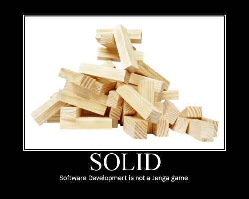
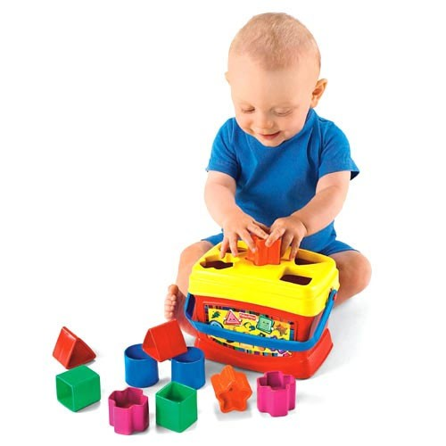
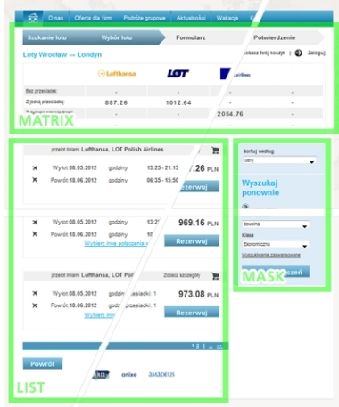
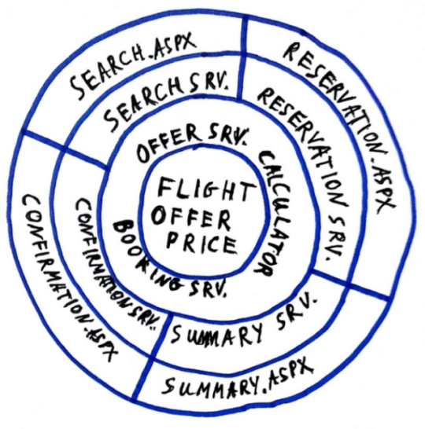

Ciekawostka - long-life systems
Czy wiecie, że niektóre systemy żyją dłużej niż pół roku?
Nasza aplikacja
-
Od 5 lat nieprzerwanie na PRD
-
Podstawowy booking engine dla 60 agencji turystycznych
-
44,000 linii produkcyjnego kodu w C#
-
18,000 linii produkcyjnego kodu w Javascript
-
1,200 testów
-
40 release’ów
-
Integruje około 10 podsystemów
Pamiętacie Boba?

Architektura ewoluuje
Dobra architektura to nie tylko dobry projekt. Dobry projekt to dopiero początek, o architekturze trzeba myśleć cały czas.
Architektura ewoluuje
Dobry system można łatwo zepsuć.

Architektura ewoluuje
Słaby system można przywrócić do życia.

Co zastaliśmy
-
Big Ball of Mud
-
Najbliżej do Transaction Script
-
Brak separacji logiki i infrastruktury
-
Brak świadomego zarządzania zależnościami
-
Bardzo duża duplikacja
-
Javascript, którego każdy się bał (jeden wielki antypattern)
Jednym zdaniem:
Kruchość + brak testów = katastrofa!
Co nas skłoniło do zmian
-
Bardzo niska niezawodność systemu
Issue list potrafiła osiągać kilkadziesiąt pozycji w miesiącu
-
Bardzo dlugo trwające update na PRD
Niekiedy nawet cały dzień :), bez powodzenia
-
Brak jakichkolwiek buildów
Systemu nikt nie potrafi uruchomić
-
Perspektywa paru lat utrzymania
System przypominał maratończyka po maratonie kiedy ciągle miał sporo trasy przed sobą
-
Potrzeba ciąglej rozbudowy
Ciągle pojawiały się nowe requesty od klienta oraz nowi klienci
Pierwsze kroki
-
Pierwsze testy jednostkowe
-
Sprzątanie nieużywanego kodu
-
Eliminacja duplikatów
-
Grupowanie powiązanych zagadnień
-
Świadome kroki w kierunku izolacji
-
Pierwsze próbowanie się z istniejącymi javscript’ami
Rzeczy nabierają właściwych kształtów

Composite i MVP pattern w Javascript
|

|
- Każdy element HTML może być częścią większej całość - doskonały przykład na composite pattern.
- Każdy element pełni zarazem odmienną funkcję a jenoczśnie zbudowany jest podobnych części:
- Mamy część odpowiedzialną za HTML - View
- Mamy część odpowiedzialną za dane - Model
- Mamy część za logike UI - Presenter
- Model nic nie wie o View i Presenterze
- Każdy element istnieje niezależnie.
|
Co nam to wniosło
-
podstawowy podział responsibility
-
możliwa indentyfikacja problemu bez parsera tekstu :)
-
reużywalność modułów
-
możliwość dodawanie kolejnych funkcjnalności bez ryzyka popsucia poprzednich.
Dependency Injection & Loose Coopling
-
Testy jednostkowe (TDD) mocno wyartykułowały odwieczną potrzebę systemu
-
Centralny punkt zarządzania zeleżnościami - niekoniecznie (ciężki) framework DI
-
Stopnie włącznie nowych obszarów
-
Mocny nacisk na separowanie się od zewnętrznych komponentów
Domain Driven Design
-
Upside-down
-
Większy nacisk na domenę niż infrastrukturę
-
Nie naginamy domeny problemu do używanej infrastruktury
-
Aplikacja stanowi opis domeny problemu
-
System zgodny z domeną łatwiej dostosowuje się do zmieniających wymagań
Zaczyna rysować się architektura
-
-
Dodatkowo w warstwie front-end pojawiają się kolejne czynniki
- Szybki rozwój i zmiany używanych bibliotek
- Globalna zmiana podejścia do javascriptów i wypracowywanie coraz lepszy wzorców
- Requesty od klientów
- Dotychczasowy model MVP robi się za mały - pojawiają się nowe warstwy
Cebula o smaku backendu.

Bibliografia
-
Jimmy Nilsson. Applying Domain-Driven Design and Patterns: With Examples in C# and .NET
-
Robert C. Martin. Agile Principles, Patterns, and Practices in C
-
http://jeffreypalermo.com/blog/the-onion-architecture-part-1/
-
http://martinfowler.com/eaaDev/uiArchs.html
-
http://www.slideshare.net/nzakas/scalable-javascript-application-architecture
/
#